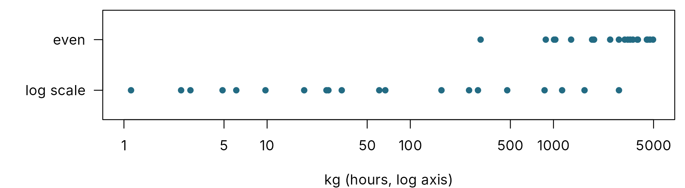
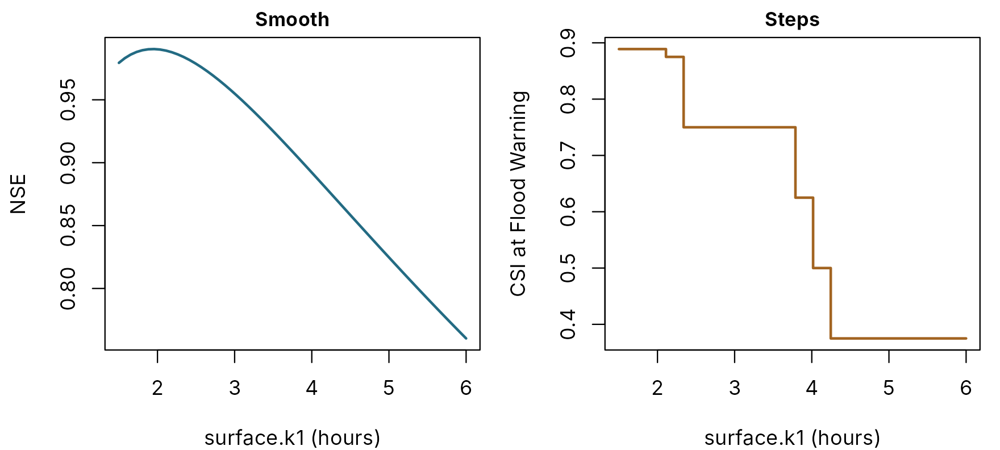

Automatic calibration: bounds, search scales, optimisers and objectives
pdmS7 documentation
Source:vignettes/auto-calibration.Rmd
auto-calibration.Rmdcalibrate_pdm() searches for parameter values that make
simulated flow match observed flow. Four choices decide how well it
does: the bounds it searches within, the
scale it searches on, the optimiser
that moves through that space, and the objective that
says what “match” means. This article takes each in turn. Multi-start
and computing budgets are covered in Calibration; the scores themselves in Scoring a simulation.
The examples use a storm-driven catchment with a known truth, and Flood Warning set at 3.7 m3/s.
set.seed(8)
n <- 24 * 40
time <- seq(as.POSIXct("2024-01-01", tz = "UTC"), by = 3600, length.out = n)
forcing <- data.frame(time = time, pet = 0.04,
rain = ifelse(stats::runif(n) < 0.08, stats::rgamma(n, 0.7, scale = 4), 0))
truth <- pdm_presets("standard")
truth$area_km2 <- 50
truth$recharge$kg <- 300
truth$distribution$cmax <- 120
run <- function(config) {
model <- pdm_from_config(config)
run_pdm(model, forcing, initial_state(model, 0.5))$output$q_m3s
}
observed <- run(truth) * exp(stats::rnorm(n, 0, 0.03))
warning_flow <- c(`Flood Warning` = 3.7)
scored <- 241:n # the first ten days are warm-upHow the search works
Every parameter is mapped onto a unit interval, from its lower bound at 0 to its upper bound at 1, so that parameters measured in millimetres, hours and fractions can be searched together. The optimiser moves through this unit box; each point it tries is turned back into parameter values, the model is run, and the objective is scored over the calibration rows. With several starts, the search begins from several points and the best end point wins.
Bounds
Bounds should enclose every physically plausible value and nothing
else. Too narrow, and the true value is excluded; too wide, and the
search wastes effort on nonsense. calibration_bounds()
looks up defaults for every component of a structure from a table
shipped with the package:
show_bounds(calibration_bounds(pdm_presets("standard")), note = TRUE)
#> path lower upper scale
#> 1 fc 0.6 1.6 linear
#> 2 distribution.cmax 20 800 linear
#> 3 distribution.b 0.05 2 linear
#> 4 recharge.kg 1 5000 log
#> 5 surface.k1 0.5 72 log
#> 6 surface.k2 0.5 72 log
#> 7 groundwater.kb 100 1000000 log
#> note
#> 1 Rainfall factor; outside this range question the rain gauge rather than the model
#> 2 Maximum store capacity (mm)
#> 3 Shape: low values give a near-uniform store
#> 4 Recharge time constant (h); spans orders of magnitude
#> 5 Time constant of the first store (h)
#> 6 Time constant of the second store (h)
#> 7 Cubic store constantOverride any range for a catchment you know, add a parameter, or hold one fixed:
b <- calibration_bounds(pdm_presets("standard"),
overrides = list(fc = c(0.9, 1.2), td = c(0, 3)),
exclude = "groundwater.kb")
show_bounds(b)
#> path lower upper scale
#> 1 fc 0.9 1.2 linear
#> 2 distribution.cmax 20 800 linear
#> 3 distribution.b 0.05 2 linear
#> 4 recharge.kg 1 5000 log
#> 5 surface.k1 0.5 72 log
#> 6 surface.k2 0.5 72 log
#> 7 td 0 3 linearSearch scale
The recharge constant kg may sensibly lie anywhere from
about 1 to 5,000 hours. Searched evenly, the whole range from 1 to 50
hours, where many responsive catchments sit, is 1 per cent of the search
space. Searched on a log scale, each tenfold step gets equal room.
set.seed(1)
even <- stats::runif(20, 1, 5000)
logged <- exp(stats::runif(20, log(1), log(5000)))
par(mar = c(4, 6, 0.6, 0.6))
plot(c(even, logged), rep(2:1, each = 20), log = "x", pch = 16, col = pal[1], yaxt = "n",
ylim = c(0.5, 2.5), xlab = "kg (hours, log axis)", ylab = "", xlim = c(1, 5000))
axis(2, at = 2:1, labels = c("even", "log scale"), las = 1)
Twenty random starting values for kg between 1 and 5,000 hours, drawn evenly (top) and on a log scale (bottom), plotted on a log axis.
On an example where the true kg is 40 hours, starting
from 1,000:
flat <- pdm_presets("standard")
flat$recharge$kg <- 40
flat_obs <- run(flat)
start <- flat
start$recharge$kg <- 1000
args <- list(start, forcing, flat_obs, lower = c(recharge.kg = 1), upper = c(recharge.kg = 5000),
warmup = 240, objective = "nse", control = list(maxit = 50))
even_fit <- do.call(calibrate_pdm, args)
log_fit <- do.call(calibrate_pdm, c(args, list(log_scale = "recharge.kg")))
data.frame(scale = c("even", "log"),
kg = round(c(even_fit$parameters, log_fit$parameters), 2),
model_runs = c(sum(even_fit$start_results$evaluations),
sum(log_fit$start_results$evaluations)))
#> scale kg model_runs
#> 1 even 40.4 84
#> 2 log 40.0 27Both find it; the log-scale search takes a fraction of the model
runs. The bounds table marks which parameters to search this way, and
compare_structures() uses it automatically. With
calibrate_pdm() and log_auto_calibration(),
name them in log_scale.
Optimisers
calibrate_pdm() offers two.
| Method | How it moves | Suits | Cost |
|---|---|---|---|
lbfgsb (default) |
Follows the slope of the objective, estimated from small steps | Smooth objectives: NSE, RMSE, log RMSE | Fewest model runs |
nelder_mead |
Moves a simplex of points by comparing their values, no slopes | Objectives with steps or flat stretches | Several times more runs |
The difference matters because some scores are not smooth. NSE changes a little for every small change of a parameter. CSI counts events, so it stays exactly the same until a simulated peak crosses the threshold, and then jumps.
grid <- seq(1.5, 6, length.out = 60)
profile <- t(vapply(grid, function(k) {
cfg <- truth
cfg$surface$k1 <- k
sim <- run(cfg)[scored]
c(nse = pdm_scorecard(sim, observed[scored])[["nse"]],
csi = pdm_threshold_scores(sim, observed[scored], warning_flow)$csi)
}, numeric(2)))
par(mfrow = c(1, 2), mar = c(4, 4.2, 1.5, 0.8))
plot(grid, profile[, "nse"], type = "l", lwd = 2, col = pal[1], xlab = "surface.k1 (hours)",
ylab = "NSE", main = "Smooth", cex.main = 0.95)
plot(grid, profile[, "csi"], type = "s", lwd = 2, col = pal[2], xlab = "surface.k1 (hours)",
ylab = "CSI at Flood Warning", main = "Steps", cex.main = 0.95)
The two objectives along one parameter, the first surface time constant, with everything else at the truth. NSE changes smoothly; CSI at Flood Warning is a staircase.
On a flat stretch the slope is zero, so a gradient method has nothing to follow and stops where it started; at a step, the slope it estimates is meaningless. Nelder-Mead only compares values, so it can cross the flats. pdmS7 runs Nelder-Mead on a logistic transform of the unit box, so every point it tries stays inside the bounds.
Objectives
The objective is what the optimiser is rewarded for:
objective |
Minimises | Emphasis |
|---|---|---|
nse |
1 - NSE | Floods; the usual default |
rmse |
Root mean square error, m3/s | Floods, in flow units |
log_rmse |
RMSE of log flows | Low flows |
threshold |
The threshold term alone | Threshold crossings only |
Rewarding threshold skill
A model for a warning service should cross the warning threshold when
the river does. calibrate_pdm() can add a threshold term to
the continuous objective:
objective = (1 - NSE) + weight × mean over thresholds of (1 - CSI)
The continuous part keeps a slope everywhere and breaks ties between parameter sets with the same CSI; the threshold part rewards getting the crossings right. Because the sum has steps, it needs Nelder-Mead.
start <- truth
start$fc <- 0.9
start$surface$k1 <- 4
start$surface$k2 <- 7
lower <- c(fc = 0.7, surface.k1 = 0.5, surface.k2 = 0.5)
upper <- c(fc = 1.4, surface.k1 = 20, surface.k2 = 20)
common <- list(start, forcing, observed, lower, upper, warmup = 240, objective = "nse",
log_scale = c("surface.k1", "surface.k2"), starts = 2, seed = 1)
nse_only <- do.call(calibrate_pdm, common)
with_threshold <- do.call(calibrate_pdm, c(common, list(
method = "nelder_mead", thresholds = warning_flow, threshold_weight = 1,
control = list(maxit = 300)
)))
summarise <- function(fit) {
sim <- run(fit$config)[scored]
events <- pdm_threshold_scores(sim, observed[scored], warning_flow)
c(round(fit$parameters, 2), nse = round(pdm_scorecard(sim, observed[scored])[["nse"]], 4),
csi = round(events$csi, 2), crossing_error_h = round(events$crossing_error_h, 2),
model_runs = sum(fit$start_results$evaluations))
}
rbind(nse_only = summarise(nse_only), with_threshold = summarise(with_threshold))
#> fc surface.k1 surface.k2 nse csi crossing_error_h model_runs
#> nse_only 1 2.00 3.91 0.9904 0.89 0.12 231
#> with_threshold 1 2.03 3.97 0.9900 1.00 0.25 468
with_threshold$objective_name
#> [1] "1-NSE + 1 x mean threshold loss (csi at Flood Warning)"Here the threshold term catches the remaining Flood Warning event at almost no cost in NSE, for about twice the model runs. That is the typical bargain: a small change in parameters, chosen with the warning in mind, rather than a different model.
Some guidance:
- Weight. NSE and CSI both run from about 0 to 1 for useful models, so a weight of 1 is a neutral start. Larger weights favour crossings over the hydrograph as a whole.
-
Events. A threshold the river crosses only once or
twice gives the optimiser almost nothing to work with, and the result
can be luck.
calibrate_pdm()refuses a threshold never crossed in the calibration period. -
Other scores.
threshold_scoremay bepod,far, or a step-based score such asets_step; false alarm ratios are minimised directly. -
Gradient methods refuse. A threshold term with
method = "lbfgsb"is an error, with the reason.
In a calibration project
log_auto_calibration() runs the same search on a
project’s registered data and windows, using the thresholds registered
with the data by name, and records everything a reviewer needs to repeat
it: bounds, search scales, method, objective and weights, starts and
seed, every start’s result, the number of model runs, and the
reasoning.
log_auto_calibration(
project, parent = 7,
lower = c(fc = 0.7, surface.k1 = 0.5, surface.k2 = 0.5),
upper = c(fc = 1.4, surface.k1 = 20, surface.k2 = 20),
log_scale = c("surface.k1", "surface.k2"), starts = 4, seed = 1,
method = "nelder_mead", threshold_objective = "Flood Warning", threshold_weight = 1,
reasoning = "Tune the surface stores for warning timing."
)Choosing
| Situation | Settings |
|---|---|
| First calibration of a catchment |
objective = "nse", default method, several starts,
bounds from calibration_bounds(), log scale where
marked |
| Low flows matter | objective = "log_rmse" |
| A warning service | Add thresholds with
method = "nelder_mead"; keep a continuous objective |
| Several structures |
compare_structures(), which applies all of the above
alike; see Choosing a model
structure
|
| Many catchments | One protocol for all; see Calibrating many catchments |